📚 NLP and Sentiment Analysis
Watch & Listen or Read Through
[1]:
#Import appropriate library
from IPython.display import YouTubeVideo
YouTubeVideo("kvP90w8jU1Y", width=600, height=450)
[1]:
Slides and transcripts are below
Welcome, everyone, to Lesson 8—our introduction to Natural Language Processing, or NLP. Today, we’ll explore how NLP enables computers to interpret, understand, and generate human language. We’ll also examine how NLP intersects with MDM—misinformation, disinformation, and malinformation—making it a crucial tool in identifying, analyzing, and combating deceptive content online.
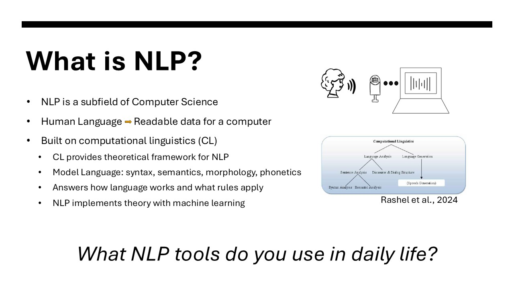
So, what exactly is NLP? It’s a subfield of computer science focused on helping computers understand and work with human language. It builds on something called computational linguistics—which gives us the theo-retical framework for how language works. That includes things like syntax, semantics, morphology, and phonetics. In short: computational linguistics explains how language works, and NLP is the set of tools and techniques that lets machines use that theory in practical ways, often through machine learning. NLP is what allows your devices to read and respond to text or speech like a human would. Pause for a moment and try to think of specific tools you might use in your day to day life that employs NLP.
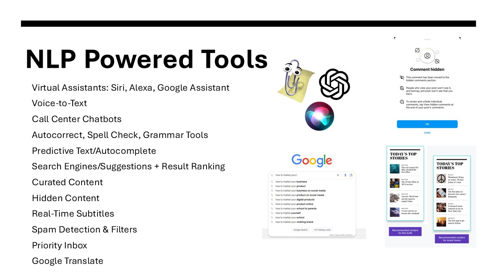
NLP is all around us—even if you don’t realize it. Some common tools you use every day that are powered by NLP include: Virtual assistants like Siri, Alexa, or Google Assistant. My first virtual assistant was clippy in Microsoft word which most of you are probably too young to have encountered. NLP tools also include Voice-to-text features, Autocorrect, spell check, and grammar tools, Predictive text or autocomplete, Search engines that suggest queries or rank results, Real-time subtitles, Spam filters and priority inboxes, and translation services like Google Translate. So, you’re already interacting with NLP all the time. The question is: how does it work?
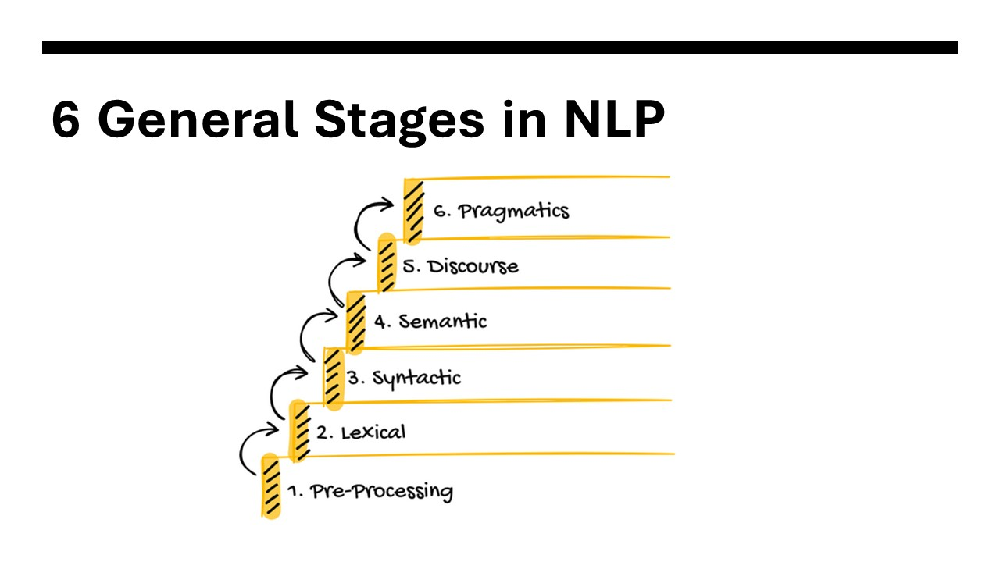
NLP usually happens in six general stages. It starts with pre-processing—which is about cleaning up and standardizing the raw text. Then comes the lexical stage, where we reduce words to their simplest forms. The syntactic stage looks at grammar and structure—figuring out how words relate to one another. Then we dive into semantics, which is all about extracting meaning from words and sentences. The discourse stage helps us interpret meaning across larger texts—paragraphs, conversations, or entire documents. Finally, pragmatics considers real-world context and speaker intent. This is especially important when we’re looking at misleading or manipulative content. We’ll work through each of these steps—starting with pre-processing.
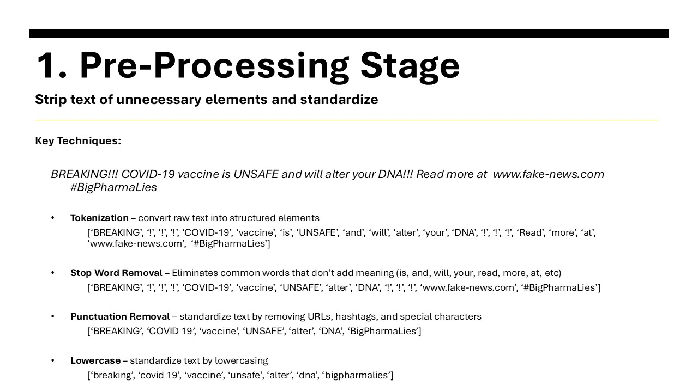
Step one: Pre-processing. This is where we take raw, messy text and clean it up. Imagine you’re trying to analyze a chaotic tweet filled with all-caps, hashtags, punctuation, and a suspicious URL. We want to strip out all the unnecessary noise and standardize the content. Key techniques include: Tokenization: breaking the text into individual elements like words or punctuation. Stop word removal: filtering out common words like “is,” “and,” “the” that don’t add much meaning. Punctuation removal: getting rid of symbols, URLs, and other non-essential characters. And finally, lowercasing, to ensure consistency. By the end, we have a cleaned-up version of the text that’s easier for a computer to work with.
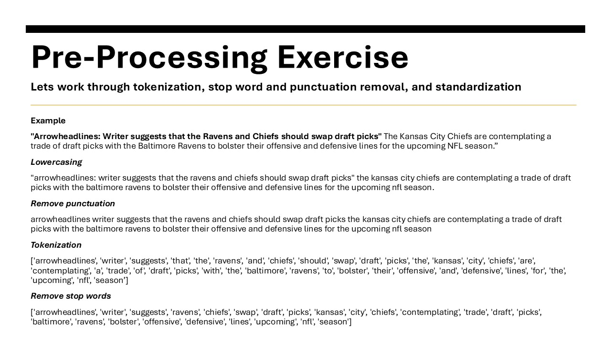
Let’s try this out together. Here’s a headline and news excerpt: “Arrow head lines: Writer suggests that the Ravens and Chiefs should swap draft picks…” Our first step is lowercasing—making all the words uniform in case. Next, we remove punctuation—getting rid of colons, commas, and periods that don’t add meaning. Then we tokenize—splitting the sentence into individual words. And finally, we remove stop words—filtering out filler words like “the,” “are,” and “with” to focus on meaningful content. What we’re left with is a condensed list of meaningful terms—things like “ravens,” “chiefs,” “draft,” and “picks.” These are the core ideas the sentence is communicating.
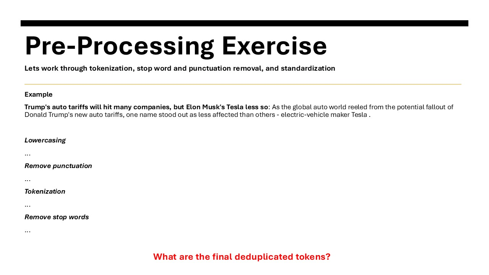
Let’s try another one. Here’s the input: “Trump’s auto tariffs will hit many companies, but Elon Musk’s Tesla less so…” Just like in the previous example, think through each step: Lowercasing, Punctuation removal, Tokenization, and Stop word removal. Once you’ve done all that, what are the final, deduplicated tokens? Pause the video and try it out for yourself. This step is about distilling the text down to its essence—eliminating noise and redundancy to make the text ready for further analysis.
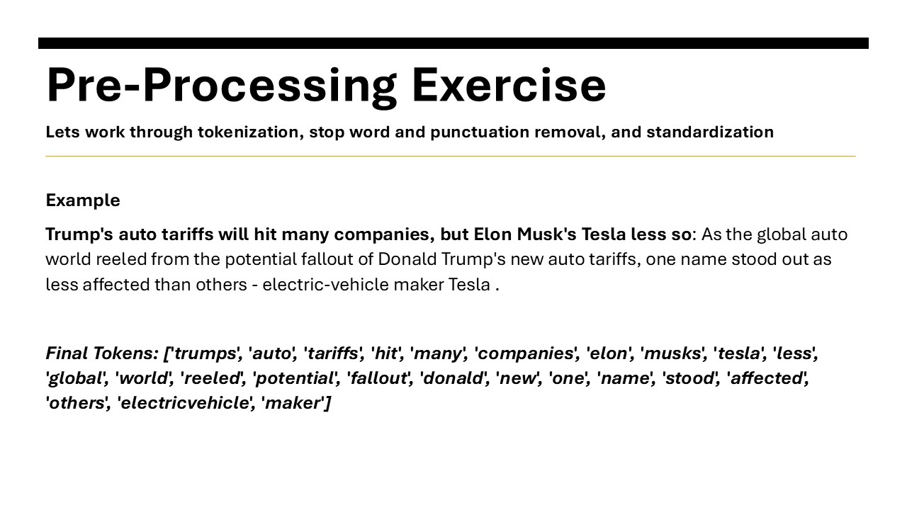
After cleaning and reducing, here’s what we end up with: ‘trumps’, ‘auto’, ‘tariffs’, ‘hit’, ‘many’, ‘companies’, ‘elon’, ‘musks’, ‘tesla’’ and so forth. Notice how these tokens capture the core entities and actions—“Trump,” “tariffs,” “Tesla,” “companies,” “fallout”—without all the grammatical glue. These cleaned-up tokens are what we’d feed into the next stages of NLP for deeper meaning extraction.
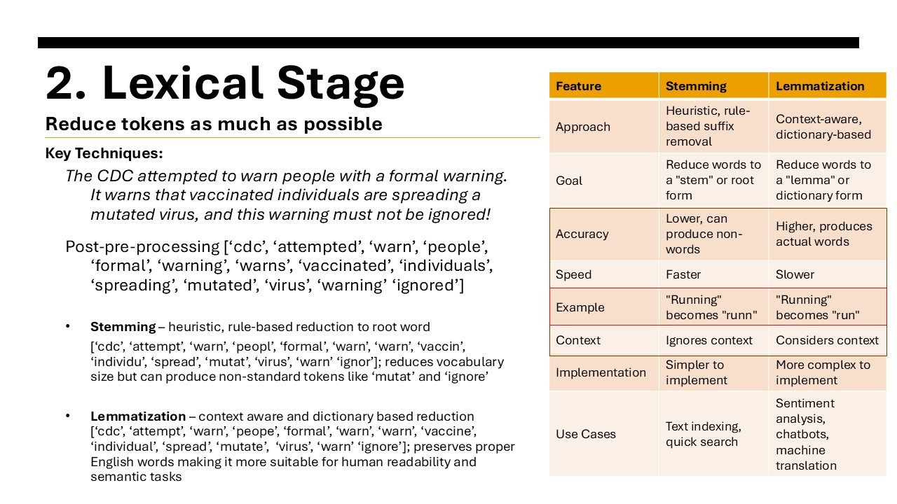
The second stage is the Lexical Stage, where we reduce our tokens to their simplest or root forms. There are two main techniques here: Stemming: a fast, rule-based method that cuts words down to their root—like turning “running” into r-u-n-n. It’s quick but sometimes messy. And Lemmatization: a more accurate, dictionary-based method that considers context—so “running” becomes simply “run.” This preserves proper grammar and is better for tasks like sentiment analysis or chatbots. Think of stemming as a rough cut and lemmatization as a precision trim. You might choose one over the other depending on your goal.
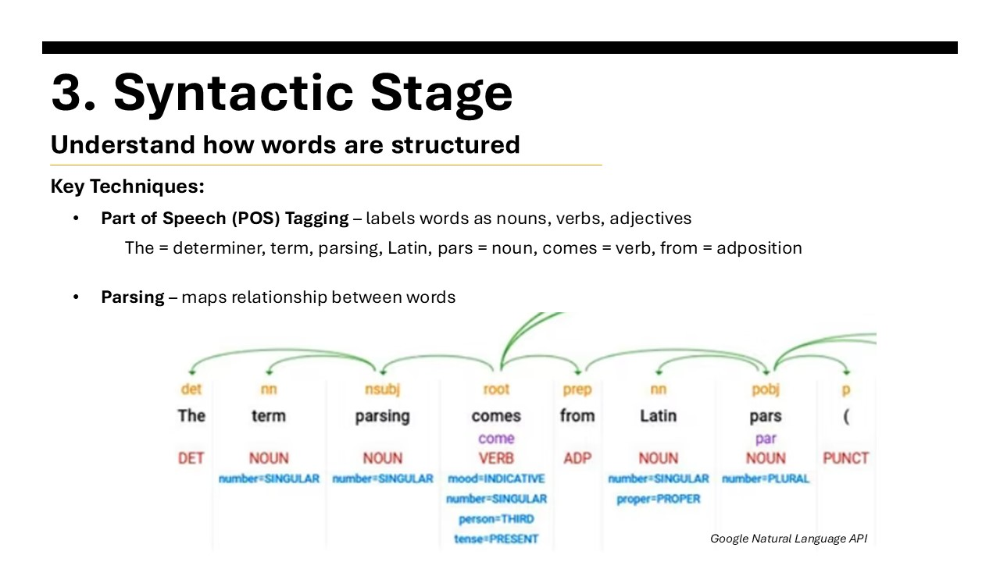
Next is the Syntactic Stage, where we focus on grammar and sentence structure. This is where NLP systems figure out the roles that different words play in a sentence. Two key techniques here are: Part-of-Speech Tagging: labeling each word as a noun, verb, adjective, etcetera, and Parsing: understanding how words relate to each other—like which word is the subject vs object and the action being taken. Tools like Google’s Natural Language API use syntactic analysis to help machines interpret the sentence structure the way a hu-man would. This helps machines grasp not just the words—but how the words are working together.
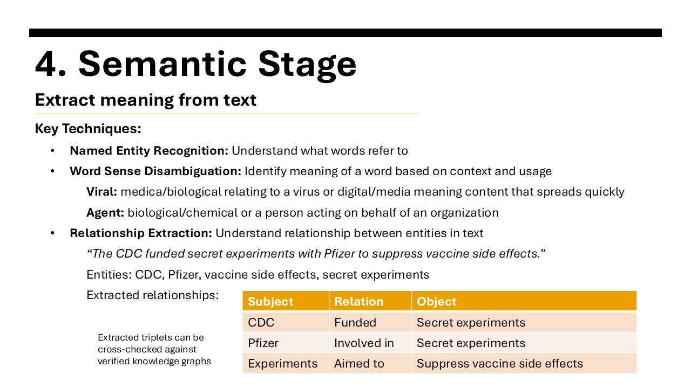
Now we enter the Semantic Stage, where things start to get deeper. Here, the focus is on extracting meaning from text—not just individual words, but what those words actually refer to in context. We use tools like: Named Entity Recognition, or NER, to identify specific people, places, or organizations. Word Sense Disambiguation to figure out which meaning of a word is being used—like whether “viral” refers to a disease or a social media trend. And Relationship Extraction to map out how these entities are connected. For example, in the sentence “The CDC funded secret experiments with Pfizer to suppress vaccine side effects,” we can identify CDC and Pfizer as entities and map their relationship—like who did what to whom.
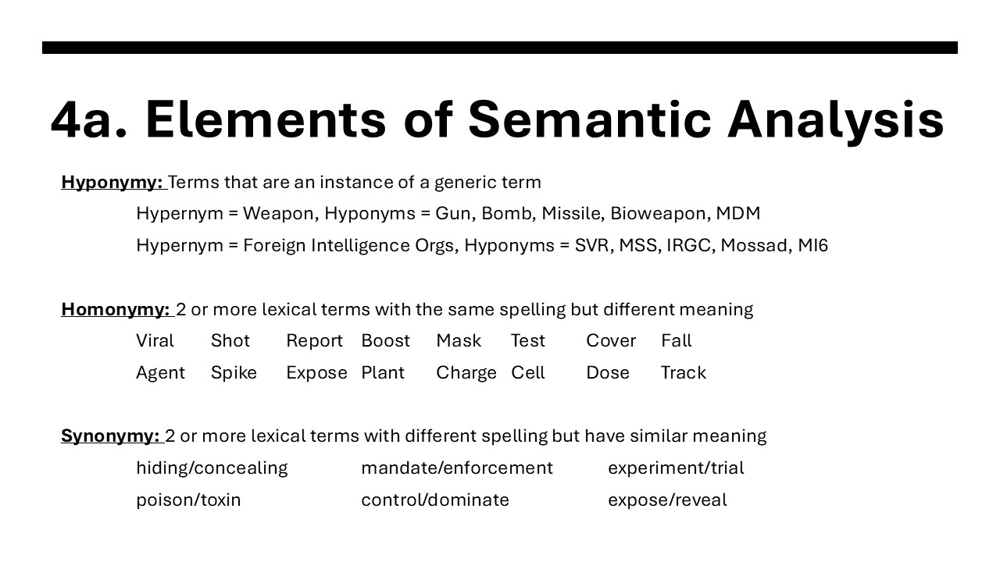
Semantic analysis is rich with linguistic detail. Let’s walk through some of the core ele-ments. Hyponymy: When one word is a more specific instance of another. For example, “bioweapon” is a kind of “weapon,” and “SVR” is a type of “foreign intelligence organiza-tion.” Homonymy: When the same word has completely different meanings—like “mask” (a physical object) versus “mask” (to hide). Synonymy: Words with similar meanings, like “experiment” and “trial,” or “poison” and “toxin.” These help NLP systems identify para-phrased or restated claims. These types of word relationships are critical for detecting nu-ance, identifying misinformation, and understanding how language can be manipulated.
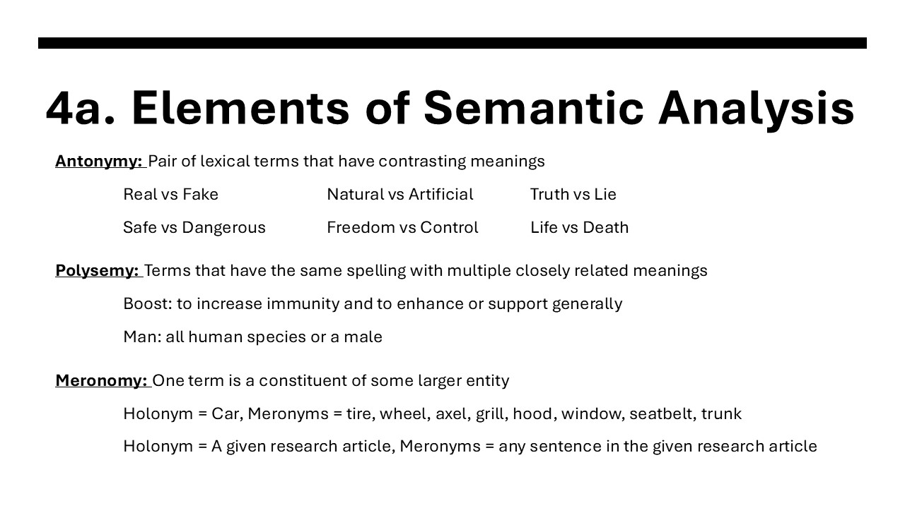
Continuing with semantic elements: Antonymy is when two words mean opposite things—like “real” versus “fake” or “safe” versus “dangerous.” Polysemy refers to a single word hav-ing multiple related meanings—like “boost” meaning “to increase immunity” or just “to help.” Meronomy is when a word refers to a part of something bigger—like a “tire” being part of a “car,” or a “sentence” being part of a “research article.” These distinctions matter when analyzing narratives. They help systems tell the difference between a literal versus figurative use or between related but distinct ideas—vital for accurate content interpreta-tion.
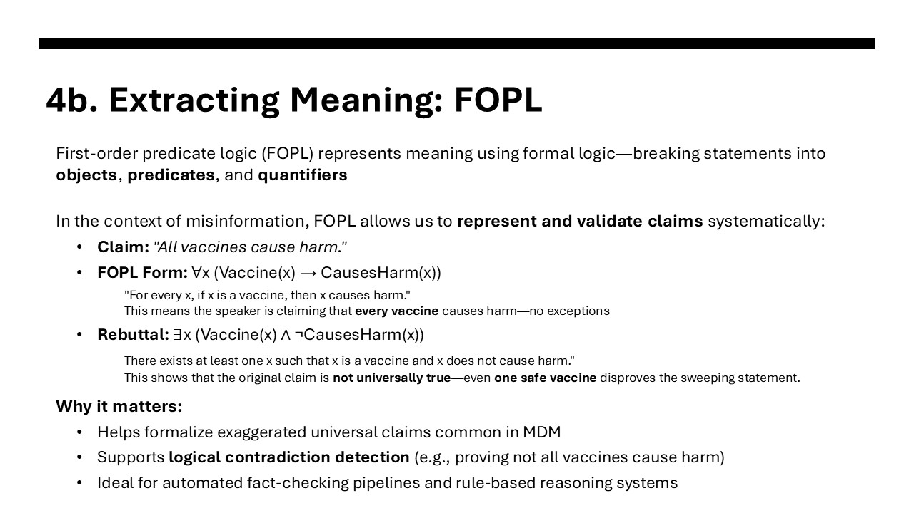
To get even more precise, we can use First-Order Predicate Logic to represent meaning in formal logic. This is especially useful in misinformation detection, where people often make sweeping or exaggerated claims. For example, the claim “All vaccines cause harm” would be expressed as: For all x, if x is a vaccine, then x causes harm which can be countered with the idea that there exists at least one vaccine that does not cause harm. This kind of logic-based structure helps us formalize, assess, and even automatically flag questionable or false claims.
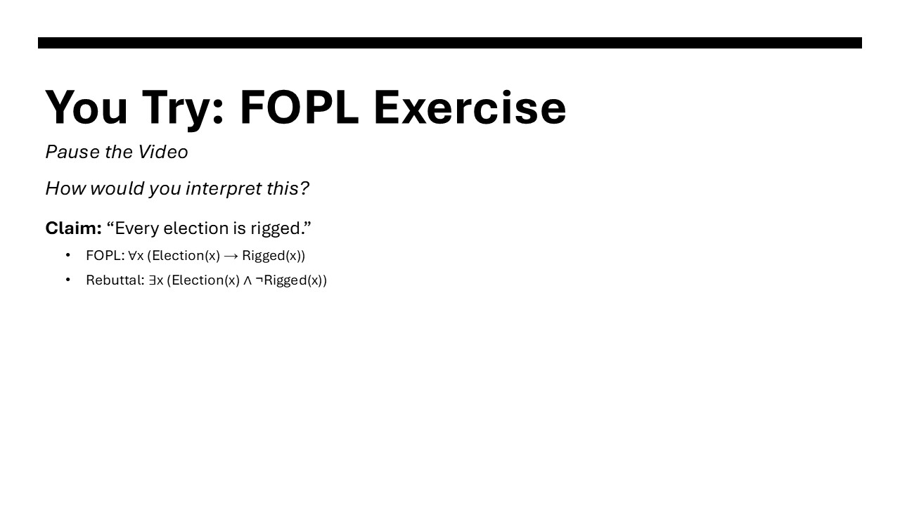
Let’s try applying this logic to a real-world example. The claim: “Every election is rigged.” Pause the video and try to interpret the statements. This is a powerful tool for both human and machine-based fact-checking.
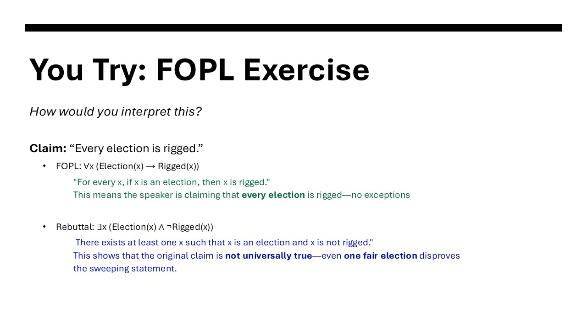
Let’s break it down. Claim: “Every election is rigged.” In logical terms, we say: “For all x, if x is an election, then x is rigged.” This claim leaves no room for exceptions, which is what makes it so easy to challenge with logic. So we do.. with a single counterexample: “There exists an x such that x is an election, and x is not rigged.” If even one fair election exists, the original claim is no longer universally true. This kind of logical reasoning is incredibly useful when we’re trying to unpack extreme or false claims in misinformation and disinformation.
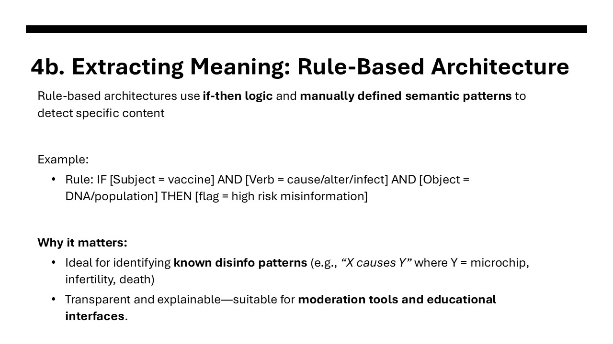
Another powerful way to extract meaning is through rule-based architectures. These sys-tems use if-then logic to flag certain patterns in text. For example, a rule might say:
“If the subject is vaccine, and the verb is cause, and the object is DNA or population, then this should be flagged as high-risk misinformation.” These rules are simple, transparent, and explainable—perfect for building tools that moderate content or teach users how to spot misinformation. While they may not catch everything, they’re excellent for identifying known, repeated misinformation patterns.
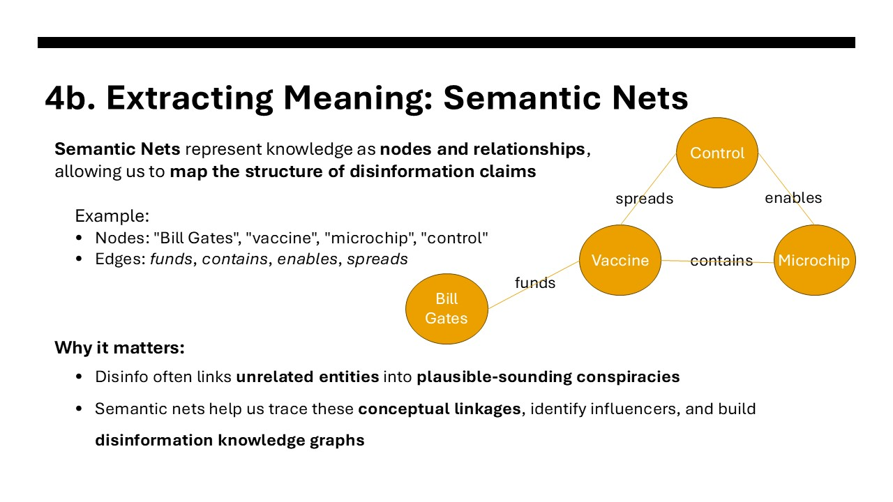
Semantic nets take things a step further by mapping relationships between concepts. Think of it like a mind map—you’ve got nodes like “Bill Gates,” “vaccine,” “microchip,” and “con-trol,” and edges that describe how these concepts are linked—like “funds,” “contains,” “enables,” and “spreads.” Disinformation often works by linking unrelated ideas together in ways that sound plausible. Semantic networks help us trace those linkages and make them visible. This is especially useful when building disinformation knowledge graphs that expose how narratives evolve or who’s central to their spread.
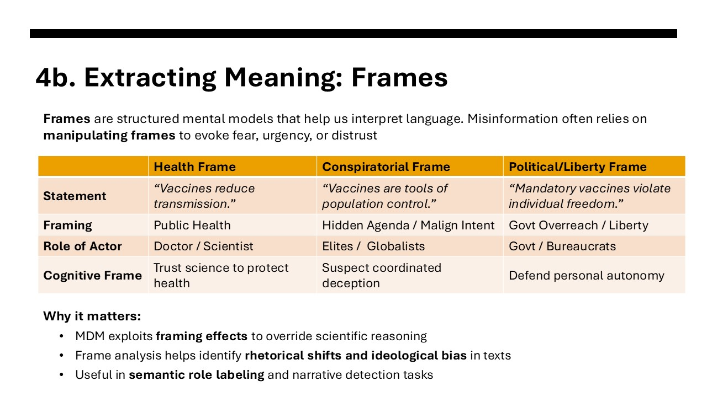
Now let’s talk about frames. Frames are mental models or worldviews that shape how we interpret information. Misinformation often relies on manipulating frames—especially emotional ones—to stir fear, anger, or distrust. Take these three statements about vaccines: “Vaccines reduce transmission” framed as a health issue… “Vaccines are tools of population control” framed as a conspiracy… and “Mandatory vaccines violate our free-dom” framed as a freedom issue. The facts might not change, but the framing does—affecting how people react. By recognizing frames, we can better detect bias, manipulation, and intent in the language being used.
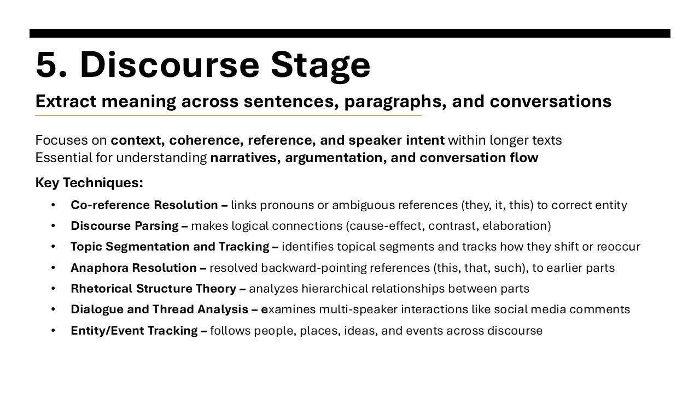
After understanding meaning at the word and sentence level, the next step is discourse analysis—looking at meaning across longer texts like paragraphs, conversations, or so-cial media threads. Here, we focus on: Co-reference resolution: figuring out what pro-nouns like “it” or “they” refer to. Discourse parsing: identifying logical connections like cause and effect or contrast. Topic tracking: following how the subject of a discussion changes. Anaphora resolution: resolving backward-pointing references like “this” or “that”. Rhetorical structure: understanding how different parts of a message relate hierarchically.
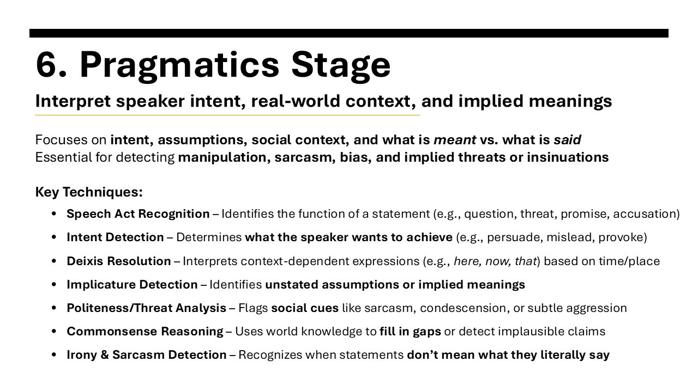
Let’s talk about Pragmatics—the final stage of NLP. This is where machines try to figure out not just what was said… but what was meant. It deals with intent, social context, and re-al-world knowledge. For example, someone might say, “Oh great, another vaccine.” But depending on the tone and context, that could be sincere—or completely sarcastic. Prag-matic analysis involves: Speech act recognition: Is this a threat, a promise, or a question? Intent detection: What’s the speaker trying to do—persuade, mislead, provoke? Deixis resolution: Understanding words like “here,” “now,” or “that” based on context. Implicature detection: Catching what’s implied but not directly said. Irony and sarcasm detec-tion: Which is vital for social media and satire. This level is critical for spotting manipula-tion, bias, and insinuation—especially in disinformation. These employ complex algorithms we won’t go too far into detail on.
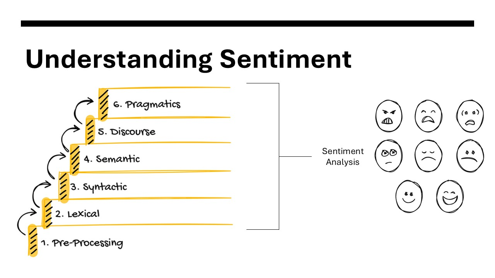
A major application of NLP—especially in the context of MDM—is sentiment analysis. It helps us understand how people feel about a topic based on their language. Is the senti-ment positive, negative, or neutral? Is the language emotional or objective? Sentiment analysis can be applied to anything from tweets and comments to full articles—making it a valuable tool for identifying outrage, fear, or trust across online discourse.
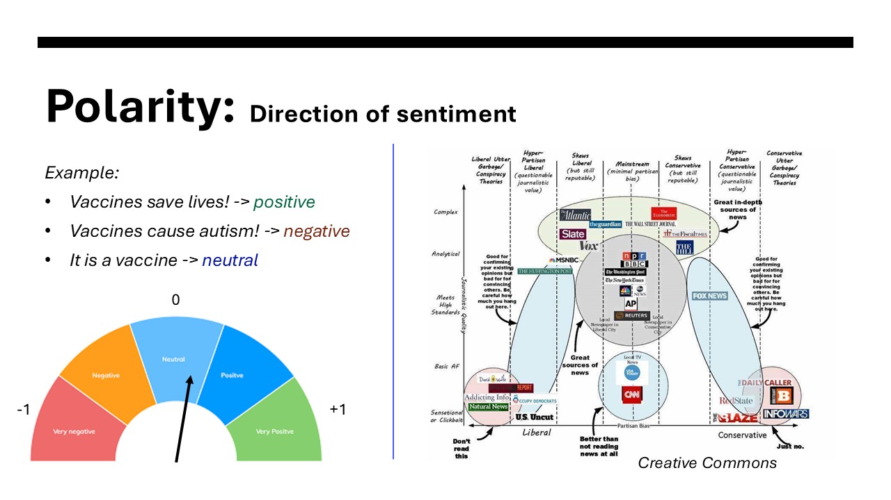
One component of sentiment analysis is polarity—most often we use it to describe an emotional tone. For example: “Vaccines save lives!” is a positive statement. “Vaccines cause autism!” is negative. “It is a vaccine” is a factual, unemeotional description and therefore neutral. In this context, polarity is usually scored from negative 1 to positive 1, with 0 being neutral. It helps us flag content that’s promoting trust and health versus content that’s instilling fear, anger, or resistance.
But polarity can also reflect ideological direction, not just emotional tone.
For example, statements or entire news outlets might lean liberal or conservative.
You may have seen media bias charts that place outlets like NPR or The New York Times on one end, and Fox News or Breitbart on the other. NLP systems can detect this political polarity by analyzing word choice, framing, and even co-occurrence patterns.
So whether we’re talking about emotional sentiment or political slant, polarity helps us better understand the underlying message—and how it might influence public opinion.
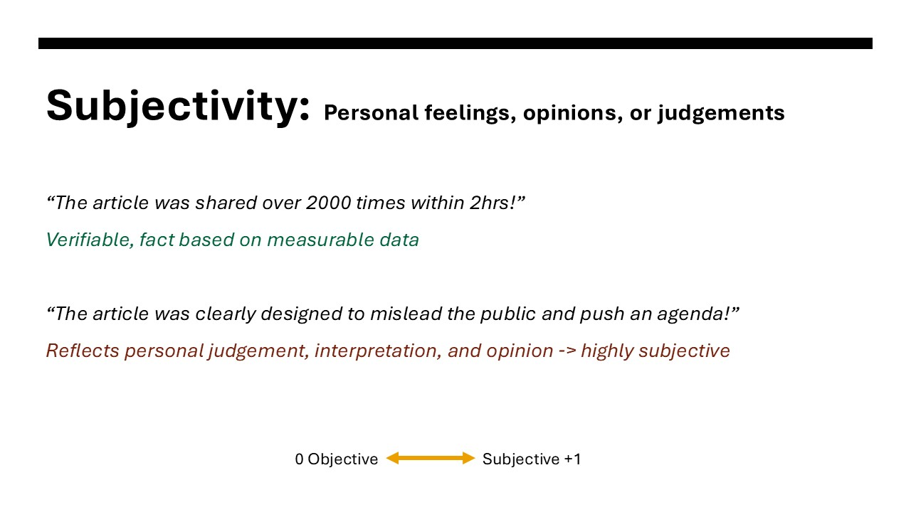
The next piece is subjectivity. This measures how much of a statement is based on per-sonal opinion versus verifiable fact. For example: “The article was shared over 2,000 times in 2 hours” is objective and measurable. “The article was clearly designed to mis-lead the public” however, is subjective, based on judgment. Subjectivity scores range from 0 (completely objective) to 1 (highly subjective). High subjectivity often signals emotionally driven or opinionated content—something we watch closely when analyzing MDM narratives.
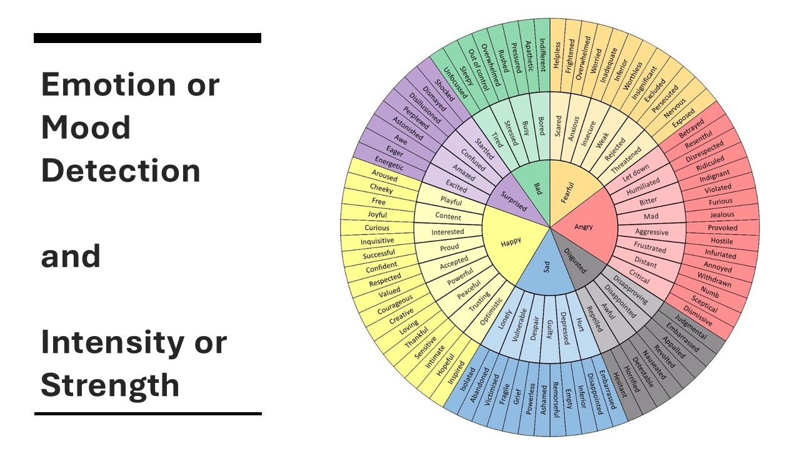
Beyond polarity and subjectivity, we can also analyze emotion and intensity—what mood is being expressed, and how strongly.
For instance, a statement might carry emotions like fear, anger, happiness, or surprise—but those can range from mild unease to intense outrage.
One useful framework is the emotion wheel, originally developed by psychologist Robert Plutchik, which has evolved over time.
It illustrates how core emotions like joy, trust, fear, and anger can blend into more complex feelings—like anticipation turning into anxiety, or joy into pride.
NLP tools often use versions of this wheel to tag language not just with a single emotion, but with emotion categories and intensities, giving us a more nuanced read on what a speaker or writer is trying to evoke.
In MDM detection, these emotional cues are often red flags—especially when strong emotional appeals are paired with low factual content or high subjectivity.
Understanding sentiment in all its forms—including the emotional tone, its strength, and where it sits on the wheel—helps us pinpoint which messages are most likely to influence behavior or perception.
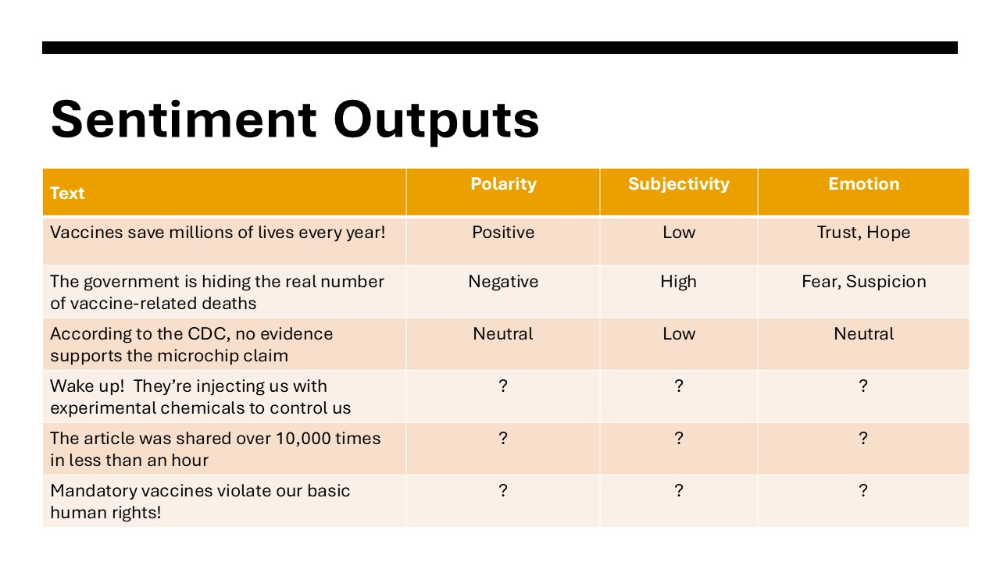
Let’s look at some examples of sentiment outputs. First, we have: “Vaccines save mil-lions of lives every year!”. Polarity is Positive, Subjectivity is Low, and detected Emotions include Trust and hope. Contrast that with: “The government is hiding the real number of vaccine-related deaths” where Polarity is Negative, Subjectivity is High, and detected Emotions include Fear and Suspicion. These examples show how NLP tools help break down the emotional tone, factual base, and intent behind different types of content. Pause the video and judge the remaining texts.
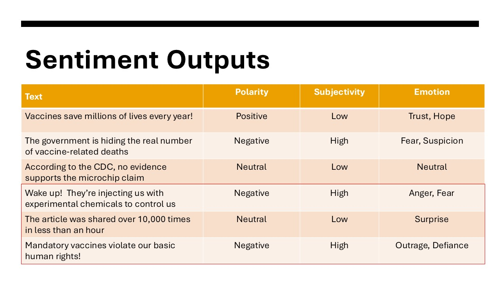
Were your assessments correct? “Wake up! They’re injecting us with experimental chemicals to control us” is Negative with high subjectivity. “The article was shared over 10,000 times in less than an hour” has neutral polarity with low subjectivity while “Mandatory vaccines violate our basic human rights” has negative polarity and high subjectivity. These cases are especially important in MDM analysis because strong emo-tional language can drive engagement, virality, and belief—even when the content isn’t fac-tually accurate.
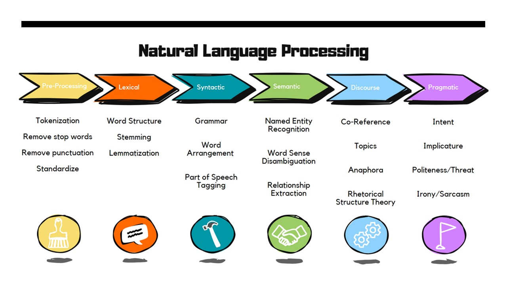
So let’s recap. We walked through all six stages of Natural Language Processing—from cleaning raw text to detecting speaker intent. We explored how machines can extract mean-ing, detect patterns, and even identify emotional tone. And we learned how these tools can be used not just for automation or analytics—but for identifying and responding to MDM.
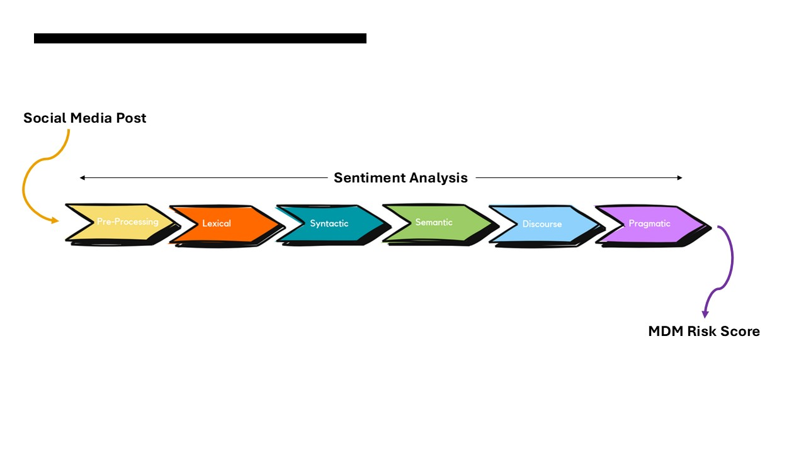
When we combine all these tools—we can start to assign MDM risk scores to individual posts. Imagine a system that flags a post as high-risk not just because it contains false claims, but also because it uses emotional framing, subjective language, and known disinformation patterns. This is the kind of integrated analysis that powers modern moderation tools, automated fact-checkers, and even intelligence dashboards. It’s where NLP meets the real-world challenge of protecting truth and reducing harm online.
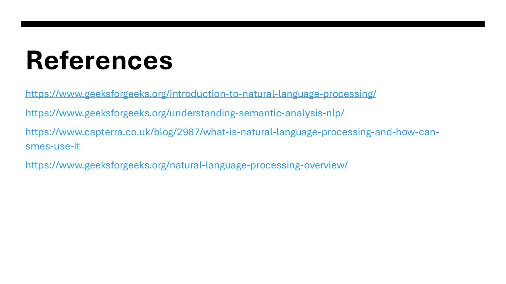
Thank you for engaging with this lesson—I hope you now have a stronger sense of how language, data, and machine learning all come together to help us navigate complex digital landscapes.